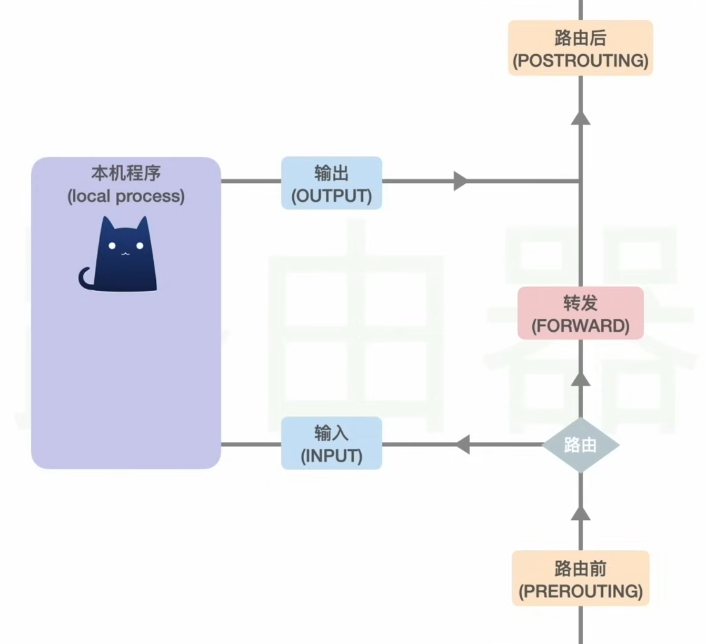

Synopsis: hotspot sharing from a MT7921 Wi-Fi card (generic Wi-Fi 6 AX1800 Dual Band USB Adapter) to provide scientific network access to multiple devices without NAT or TTL decrement or specialized travel router hardware like GL-iNet.
Hardware
MSI Laptop Core Ultra 125H, 32GB RAM, 1TB, used as the VM gateway
- MT7921 Wi-Fi adapter
HP laptop, 32GB RAM, used as one of the client devices
Miscellaneous Android, iOS phones.
Software
VirtualBox, has ability for USB passthrough to VMs.
V2RayN, Windows specific V2Ray client, has TUN mode and creates a proxy server
- alternative are Clash Meta variants (Verge, FIClash, Nyanpasu) which uses .yaml based configuration, may be easier for agentic AI help
Kali Linux, the adapter’s seller advertise Kali Linux support which would indicate it will be supported, standard Linux would be less involved than setting up OpenWRT VM though it requires manual config, but not as polished as soft routers like OpenClash, PassWall.
hostapd, setting up Wi-Fi network using the MT7921 adapter in Kali
V2RayNG, ShadowRocket, hev-tun2socks on client devices in case PAC/proxy config, TPROXY or REDIRECT is proven to be difficult
Acceptance criteria
Production access (one of which must not fail “OR”)
- OpenVPN (AWS Client VPN on HP laptop) in port 443 in an AWS network
- Microsoft remote desktop gateway running on port 443, AWS network
- RustDesk UDP port 21118 over private IP, tunnelable through VLESS
- TCP/IP SaaS services on port 443, YouTrack, Confluence, Microsoft Teams, AWS console, Outlook
These services should be preferably access on the HP laptop, through Kali proxy and Wi-Fi adapter, but in emergency, accessing it on the MSI laptop is also acceptable. Specifically MS Teams on MSI laptop for best latency.
Other criteria
- Jellyfin, bandwidth intensive user application, either access publicly 443/TCP or over VLESS with private IP
- Home Assistant, Authelia, Seerr and generic web applications, mostly hosted on public internet, but also accessible via proxy/VPN
- sensitive homelab login, webtop, Proxmox, device login, only access over VPN/proxy via private IP
- internet resources, Reddit, Facebook, Google, YouTube, Github, ChatGPT, Gemini
We can have the assumption all of the services can be accessed anywhere, no accessing of geo-restricted content
Architecture
Starlink -⇒ Cruise -⇒ MSI Laptop (built-in Intel WiFi) -⇒V2Ray/Clash (proxy only no TUN) -⇒ VBox Host Only Adapter -⇒ HostAPD WiFi -⇒ Wireless clients
- it’s also optional requirement to passthrough a USB NIC to the Kali VM so the HP laptop can be plugged in, by creating a network bridge in Kali
- VBox host only adapter network is 192.168.108.0/24
- preferably, no NAT is needed with WiFi network, Windows host and Kali VM uses a static IP for that, while the remainder of that subnet can be used with a DHCP server to handout to wired and wireless clients
- initially PAC/manual proxy server config is needed on clients for testing, user input the VBox host only IP address port 10808 on their phone
- robust solution might be needed so user no need to config their client devices and traffics goes through transparently
- in the worst case, client can use V2Ray/SR/Clash which TUN mode (default on mobile) with the proxy server of the Windows host
Compartmentalization: separation on a physical level, client device is unaware of the MSI laptop, and upstream network(s) won’t know anything about virtual network because it’s separated on a hardware level (USB passthrough)
Proxy, not NAT/routing: the proxy server on MSI intercept and opens a new connection, not just simply routing it, to the outside, this is like MSI laptop browsing the internet
Smart routing: V2Ray based proxy can route based on domain name, or even geosite categories unlike traditional VPN split-tunneling, it can also perform traffic filtering and block suspicious and unwanted bandwidth heavy traffic
Proxy abstraction: in V2Ray/Clash, we just store a list of upstream obfuscated proxy servers with ability for CRUD, if one server fails switch it on the MSI laptop, no need to change Kali/client config
Challenges:
The project is under the assumption Kali VM do not and will not need internet access, it simply handles the Wi-Fi adapter and upstream proxy forwarding.
- this can be difficult if Kali need to fetch packages or access internet or if agentic Codex debugging is needed
- the machine must be setup and tested with all drivers, packages installed while in NAT network before switching to host only
- SSH server can be made accessible for agentic debugging but no outbound internet access limitation still exists in Kali
- by giving internet access other than using the proxy server can cause dangerous routing loops
What’s done right now
- Kali VM installed and functional with basic tools
- Kali VM in NAT mode
- VBox guest service installed for graphical scaling and easy copy/paste
Todos
test setup of Wi-Fi adapter in normal networksetup DHCPinstall V2RayN first for simplicity- hijack captive portal check (connectivity.gstatic captive.apple etc)
switch to host only networking and redo DHCP/routing/Wi-Fi network (manually configure proxy)- research about TPROXY/REDIRECT and whether these can be used
- user-acceptance testing of production application and homelab/entertainment ones
- UAT on mobile client devices which has more limitation than Windows PC
- setup scripts/automation and troubleshooting workflow on Kali VM
- compile routing rules in V2Ray, prefer direct when possible, optionally use Clash for even more powerful rules/routing
- block Apple/Android related domains or obfuscate it
- throughput testing, Wi-Fi and virtual networking, optimization
- improve throughput especially through proxy
- test the same setup using VMWare workstation
- if time remains, extend the homelab to add services like Jellyfin, DNS adblock etc on the host or VM to provide additional private network functionality
Disable power management in Kali
Install
sudo apt install -y hostapd dnsmasq iw rfkill nftables tcpdump iperf3 iproute2 conntrack jq netcat-openbsdsudo iw reg set CA
sudo nmcli device set wlan0 managed no
sudo rfkill unblock wifi
sudo ip link set wlan0 down
sudo ip addr flush dev wlan0
sudo ip addr add 192.168.109.1/24 dev wlan0
sudo ip link set wlan0 upHostapd is located in /etc/hostapd/hostapd.conf and a backup 2.4g at /etc/hostapd/hostapd-2g.conf
Useful settings
country_code=
ieee80211d=1
ieee80211h=1
hw_mode=a
channel=40 # 36,40,44 for 5GHz and 1,6,11 for 2.4Ghz
ssid=
wpa_passphrase=
Start hostapd
sudo hostapd -dd /etc/hostapd/hostapd.confDHCP server
On Android, if DHCP server is not setup, the Wi-Fi hotspot will not work
Config location uses a directory
sudo dnsmasq --no-daemon --conf-file=/etc/dnsmasq.conf --conf-dir=/etc/dnsmasq.dbind-dynamic
except-interface=eth0
# DHCP range for Wi-Fi clients
dhcp-range=192.168.109.100,192.168.109.199,255.255.255.0,12h
dhcp-option=option:router,192.168.109.1
dhcp-option=option:dns-server,192.168.109.1
# Useful logging during testing
log-dhcp
# Local test domain
domain=vboxwifi.test
local=/vboxwifi.test/- the DHCP server will bind on all interfaces except for
eht0
Temporary firewall rule to allow cross-communication
sudo iptables -A DOCKER-USER \
-m conntrack --ctstate ESTABLISHED,RELATED \
-j ACCEPT
sudo iptables -A DOCKER-USER \
-i wlan0 -o eth0 \
-s 192.168.109.0/24 \
-d 192.168.108.1 \
-p icmp \
-j ACCEPT
sudo iptables -A DOCKER-USER \
-i eth0 -o wlan0 \
-s 192.168.108.1 \
-d 192.168.109.0/24 \
-p icmp \
-j ACCEPT
sudo iptables -A DOCKER-USER \
-i wlan0 -o eth0 \
-s 192.168.109.0/24 \
-d 192.168.108.1 \
-p tcp --dport 10808 \
-m conntrack --ctstate NEW \
-j ACCEPT- allow ping from both direction
- allow 10808/tcp from Wi-Fi network to Windows host-only
systemd-journald causes high CPU usage due to virtualbox limitations, edit the /etc/systemd/journald.conf
[Journal]
ReadKMsg=nosudo systemctl restart systemd-journaldTurning on silent mode in MSI center seem to make iperf3 test slow from Kali to Windows?
socat TCP-LISTEN:1080,reuseaddr,fork TCP:192.168.108.1:10808
Using socat to re-terminate a TCP connection seems to be much faster compared to native
- nftables routing due to Wi-Fi card/VirtualBox/driver limitations
- unconfirmed, both are fast enough or slow enough
Installing singbox
curl -fsSL https://sing-box.app/install.sh | sudo shSingbox is installed in
/usr/bin/sing-box
/etc/sing-box/config.json
Manage singbox
sudo systemctl restart sing-box
TUN Mode - creates a virtual network card
Stage 1 — replace socat with an explicit sing-box SOCKS relay
Stage 2 — create the Kali TUN inbound
Stage 3 — explicitly protect the upstream route
Stage 4 — decide Windows-resource policy
Stage 5 — DNS
Stage 6 — UDP
Singbox creates a TUN interface and route all traffic through it
0.0.0.0/1 via 172.19.0.2 dev sb-tun0 table 2022- it also exclude routes, for example to localhost, LAN subnets
- every packet will be routed to the sb-tun0 interface which singbox can process
V2rayN(Xray) DNS process for SOCKS5 proxy
Using blacklist mode, AsIs routing
For direct domains
- browser/compatible application request via SOCKS5 proxy
- it usually sends the domain name, not TCP connection to arbitrary IP:80/443
- local V2Ray resolves domain via system DNS (DHCP)
- make a new TCP connection using the IP address
For proxy domain
- with
AsIsrule, if it’s domain matching, and rule decides that it’s proxy - instruct the remote server to visit that domain, the request is encrypted
- remote server receives the domain name and perform DNS resolution in their network
- e.g. for custom hosts, we’d need to add it into remote server’s DNS server or hosts file
- the V2Ray/Xray hosts is not the right place
Sniffing - when enabled, V2Ray will extract the SNI or Host header for routing decisions
curl -x socks5h://localhost:10808 142.251.33.206
# accepted tcp:142.251.33.206:80 [socks -> direct]
curl -x socks5h://localhost:10808 1.1.1.1 -H "Host: google.com"
# tcp:1.1.1.1:80
# sniffed domain: google.com
# accepted tcp:1.1.1.1:80 [socks -> proxy]- if sniffing is turned off locally, even if it’s turn on remote node, the domain will still be resolved on the remote side
- in the 1.1.1.1 case above, is sniffing is disabled end to end, google.com domain isn’t extract, typical Cloudflare error occurs
If sniffing is disabled locally, but only enabled on remote side, then the IP address must have a rule of proxy
curl -x socks5h://localhost:10808 1.1.1.1 -H "Host: google.com"- locally, if 1.1.1.1 is direct, then traffic will go direct, leading to unable to connect
- if 1.1.1.1 is rule as proxy, the remote node with sniffing will request google.com instead
UDP
UDP doesn’t interoperate with sing-box/xray core
Switching it to sing-box solves the issue
Use UoT for compatibility
Wi-Fi enhancement
Setting up
Local Services
ECH
Systemd services
hostapd- nothing special needed- as long as
/etc/hostapd/hostapd.confexists and it’s used
- as long as
sudo systemctl unmask hostapd
sudo systemctl enable --now hostapddnsmasq- usingbind-dynamicso it doesn’t depend on anythingnftables- doesn’t depend on anythingsing-box- should restart with nftables
A standalone vbox-wifi-gateway
[Unit]
Description=VirtualBox Wi-Fi Gateway
Requires=hostapd.service dnsmasq.service nftables.service sing-box.service
After=hostapd.service dnsmasq.service nftables.service sing-box.service
[Install]
WantedBy=multi-user.targetAWS Client VPN on a gateway
use a udev rule to stop VPN from disabling IP forwarding
#!/bin/sh
# /usr/local/sbin/restore-ip-forwarding
set -eu
i=0
while [ "$i" -lt 10 ]; do
/usr/sbin/sysctl -q -w net.ipv4.ip_forward=1
sleep 1
i=$((i + 1))
done
logger -t aws-vpn-ip-forward "Restored net.ipv4.ip_forward=1"# /etc/systemd/system/restore-ip-forwarding.service
[Unit]
Description=Restore IPv4 forwarding after AWS Client VPN connects
[Service]
Type=oneshot
ExecStart=/usr/local/sbin/restore-ip-forwardingcreate the udev rule
sudo tee /etc/udev/rules.d/90-aws-vpn-ip-forward.rules >/dev/null <<'EOF'
ACTION=="add", SUBSYSTEM=="net", KERNEL=="tun0", TAG+="systemd", ENV{SYSTEMD_WANTS}+="restore-ip-forwarding.service"
EOFsudo systemctl daemon-reload
sudo udevadm control --reload-rules